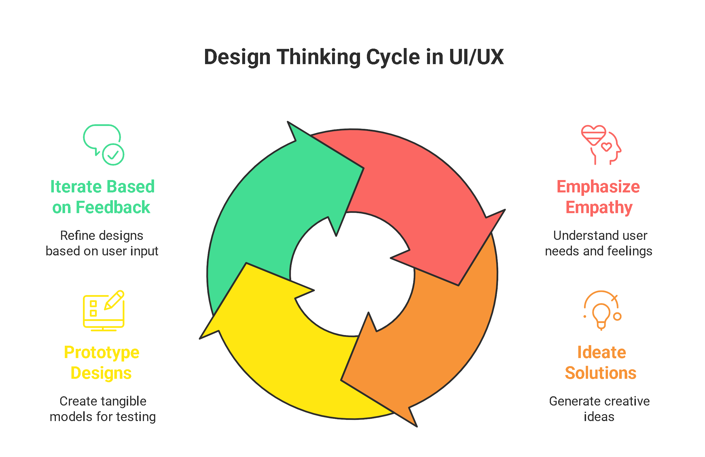
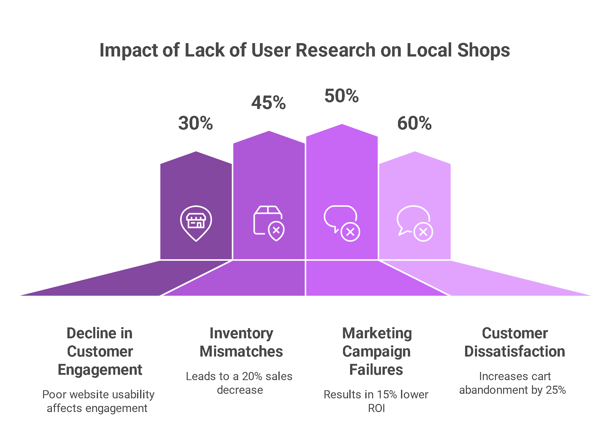
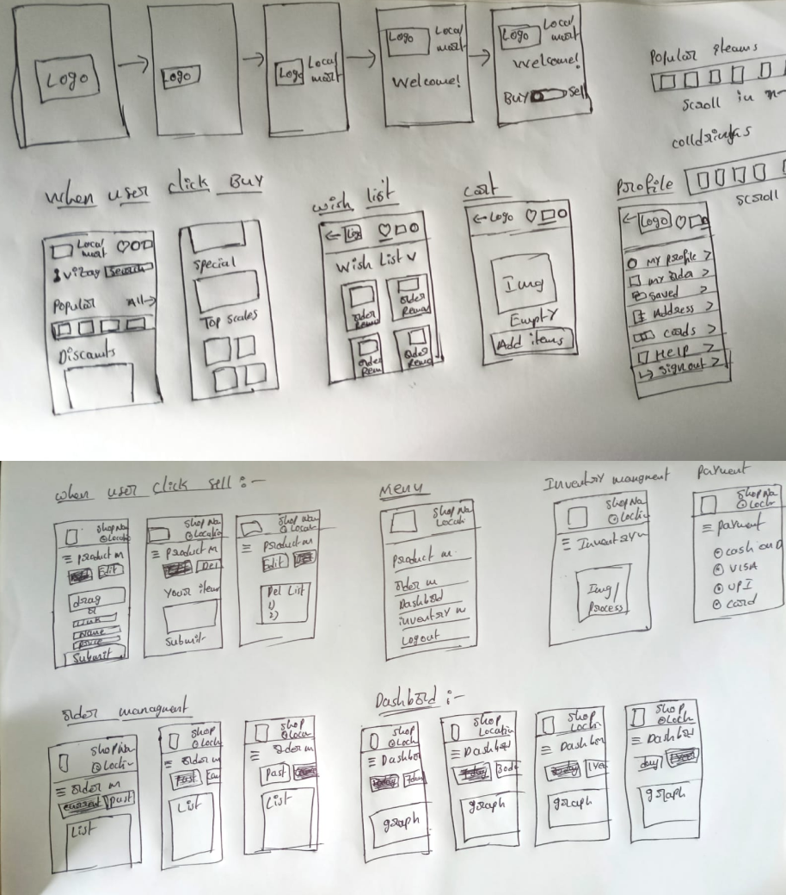

My first UX Case Study
Overview
Role
UI/UX designer
Time Frame
2 Weeks
Tools is use
Figma,VS code
Why I Chose This Project
The idea behind Local Mart is to bridge the gap between local shopkeepers and buyers by providing a digital platform that supports community-driven commerce. While most e-commerce grocery businesses focus on their own branded stores or centralized inventory, Local Mart empowers small and local sellers to participate in the digital economy.
This approach not only helps local shopkeepers gain visibility and compete online, but also benefits buyers by offering more affordable prices and access to nearby stores. The goal is to create a platform that supports inclusive growth, fosters local business, and enhances the shopping experience through convenience and trust.
Project Challenges
- Creating a web based online portal.
- Find the right target group for my idea.
- Sell or buy products online without downloading an app.
- Use design thinking methods to find solution space.
The Process- Design Thinking
Understanding user needs and emotions is the first step before initiating the design process, as illustrated in the image below.
Quantitative Research
I began with quantitative research to identify the real needs and behaviors of the target user group. Below are some of the key insights gathered from the data:
According to the statistics, the majority of e-commerce grocery store users fall within the 25–34 age group, with a significant portion being female.The statistical graph below provides a clearer picture of global e-commerce grocery store user demographics.

Problem statements
Local shops are struggling to compete in the digital marketplace due to poor user research and design practices. This results in low customer engagement, inventory mismatches, ineffective marketing efforts, and high cart abandonment rates — all of which negatively impact both buyers and local sellers.

Initial Sketches and wireframe
The wireframes below represent the initial structural layout and user journey designed for the Local Mart website, focusing on clarity, accessibility, and seamless navigation.

color palette
Selected Color Palette Representing Local Mart's Visual Identity
Visual Design
Final Visual Representation of Local Mart’s Interface
Visual Design
Final Visual Representation of Local Mart’s Interface
Key Takeaways / Learnings
This project helped me understand the value of balancing user needs with business goals. I also learned how user research and visual consistency directly impact usability and trust.
Conclusion
Local Mart aims to empower local shopkeepers by bringing their presence online. The final design improves usability, strengthens brand identity, and provides users with a seamless shopping experience.